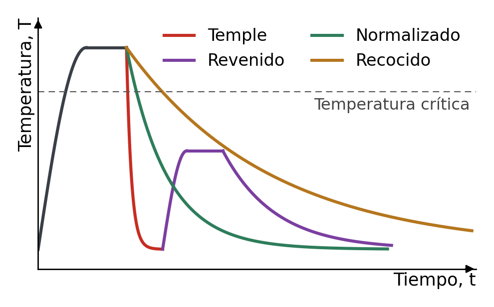

Un mismo acero puede salir de fábrica blando y fácil de mecanizar o duro como una lima. La composición es la misma; lo que cambia es cómo se ha calentado, enfriado o deformado, porque eso reordena su estructura interna. En este apartado vemos qué tratamientos y qué procesos de fabricación se usan para ajustar las propiedades de un material y qué propiedad mejora, y a costa de cuál, cada uno.
Para qué sirve este apartado
Es contextualización: aquí no hay cálculos. Sirve para interpretar los ensayos —por qué un acero templado da más dureza y menos resiliencia que el mismo acero sin templar— y para razonar la elección de un material y su proceso en el informe de impacto y sostenibilidad.
Tratamientos térmicos
Un tratamiento térmico somete la pieza, ya en estado sólido, a un ciclo de calentamiento, mantenimiento y enfriamiento. No cambia la composición: cambia la estructura cristalina y el tamaño de grano. Se aplican sobre todo a los aceros, y la variable decisiva es la velocidad de enfriamiento.
| Tratamiento | Qué se hace | Qué consigue | Ejemplo de uso |
|---|---|---|---|
| Temple | Calentar por encima de la temperatura crítica y enfriar muy deprisa, en agua o en aceite. | Aumenta mucho la dureza y la resistencia mecánica; el material se vuelve frágil. | Herramientas de corte, limas, filos. |
| Revenido | Siempre después del temple: calentar por debajo de la temperatura crítica y enfriar despacio. | Elimina tensiones internas y recupera tenacidad a cambio de perder algo de dureza. | Muelles, ejes, engranajes. |
| Recocido | Calentar y enfriar muy lentamente, normalmente dentro del propio horno. | Ablanda el material, elimina tensiones y mejora la ductilidad y la facilidad para mecanizarlo. | Chapas y piezas antes de deformarlas en frío o de mecanizarlas. |
| Normalizado | Calentar por encima de la temperatura crítica y dejar enfriar al aire tranquilo. | Afina y homogeneiza el grano; deja el acero en un estado de referencia tras la forja o el laminado. | Piezas forjadas o laminadas antes de otros tratamientos. |
La regla que conviene recordar: cuanto más rápido es el enfriamiento, más duro y más frágil queda el acero; cuanto más lento, más blando y más tenaz. Por eso temple y revenido van juntos: el temple da la dureza y el revenido devuelve parte de la tenacidad.

Tratamientos de superficie
Muchas piezas necesitan una superficie dura que resista el desgaste y un núcleo tenaz que aguante los golpes. Como un temple de toda la pieza la haría frágil, se trata solo la capa exterior.
- Tratamientos termoquímicos. Además de calentar, se cambia la composición de la superficie haciendo que entre en ella otro elemento: cementación (carbono, seguida de temple), nitruración (nitrógeno) y carbonitruración (los dos). Dientes de engranaje, levas y árboles de transmisión.
- Temple superficial. Se calienta solo la capa exterior, por inducción o con llama, y se enfría enseguida. Guías de máquinas y cigüeñales.
- Recubrimientos. Se deposita otra capa sobre la pieza para protegerla de la corrosión o del desgaste: galvanizado (cinc), cromado, anodizado del aluminio, pinturas y los nuevos recubrimientos por deposición en fase vapor, PVD y CVD, que dejan capas de pocas micras muy duras en herramientas y brocas.
Procesos de fabricación y propiedades
El proceso con el que se da forma a una pieza también cambia sus propiedades, no solo su geometría.
| Proceso | En qué consiste | Efecto sobre el material |
|---|---|---|
| Moldeo o fundición | Verter el material fundido en un molde con la forma de la pieza. | Permite formas complejas, pero el grano sale grueso y puede haber poros: menor resistencia y tenacidad que una pieza forjada. |
| Conformado en caliente | Deformar por encima de la temperatura de recristalización: forja, laminación, extrusión, estampación. | Afina el grano y orienta la «fibra» del material según la forma de la pieza, lo que mejora su resistencia y su tenacidad. |
| Conformado en frío | Deformar a temperatura ambiente: laminación en frío, trefilado, doblado, embutición. | Produce acritud: suben la dureza y el límite elástico y baja la ductilidad. Si hace falta volver a deformar, se da antes un recocido. |
| Mecanizado | Arrancar material en forma de viruta: torneado, fresado, taladrado. | No cambia el interior del material; da precisión de medidas y un buen acabado superficial. |
| Soldadura | Unión permanente fundiendo localmente las piezas. | Alrededor del cordón queda una zona afectada por el calor cuyas propiedades pueden empeorar; a veces se corrige con un tratamiento térmico posterior. |
Del proceso a los ensayos y a la sostenibilidad
Todo esto se ve en los ensayos: un acero templado o con acritud da más dureza Brinell o Vickers y menos energía absorbida en el péndulo de Charpy que el mismo acero recocido. Y cada tratamiento o proceso consume energía y recursos: tenlo en cuenta al valorar el impacto de un material en el apartado siguiente.
Relaciona
Relaciona cada tratamiento o proceso con el efecto que produce en el material. Recuerda la regla: cuanto más rápido es el enfriamiento, más duro y más frágil queda el acero.
Relaciona cada tratamiento o proceso con el efecto que produce en el material. Recuerda la regla: cuanto más rápido es el enfriamiento, más duro y más frágil queda el acero.
", "showMinimize": false, "itinerary": {"showClue": false, "clueGame": "", "percentageClue": 40, "showCodeAccess": false, "codeAccess": "", "messageCodeAccess": ""}, "cardsGame": [{"url": "", "x": 0, "y": 0, "author": "", "alt": "", "audio": "", "color": "#000000", "backcolor": "#ffffff", "eText": "Temple", "urlBk": "", "xBk": 0, "yBk": 0, "authorBk": "", "altBk": "", "audioBk": "", "colorBk": "#000000", "backcolorBk": "#ffffff", "eTextBk": "Aumenta%20mucho%20la%20dureza%20y%20la%20resistencia%20mec%C3%A1nica%3B%20el%20material%20se%20vuelve%20fr%C3%A1gil"}, {"url": "", "x": 0, "y": 0, "author": "", "alt": "", "audio": "", "color": "#000000", "backcolor": "#ffffff", "eText": "Revenido", "urlBk": "", "xBk": 0, "yBk": 0, "authorBk": "", "altBk": "", "audioBk": "", "colorBk": "#000000", "backcolorBk": "#ffffff", "eTextBk": "Elimina%20tensiones%20internas%20y%20recupera%20tenacidad%20a%20cambio%20de%20algo%20de%20dureza"}, {"url": "", "x": 0, "y": 0, "author": "", "alt": "", "audio": "", "color": "#000000", "backcolor": "#ffffff", "eText": "Recocido", "urlBk": "", "xBk": 0, "yBk": 0, "authorBk": "", "altBk": "", "audioBk": "", "colorBk": "#000000", "backcolorBk": "#ffffff", "eTextBk": "Ablanda%20el%20material%20y%20mejora%20la%20ductilidad%20y%20la%20facilidad%20para%20mecanizarlo"}, {"url": "", "x": 0, "y": 0, "author": "", "alt": "", "audio": "", "color": "#000000", "backcolor": "#ffffff", "eText": "Normalizado", "urlBk": "", "xBk": 0, "yBk": 0, "authorBk": "", "altBk": "", "audioBk": "", "colorBk": "#000000", "backcolorBk": "#ffffff", "eTextBk": "Afina%20y%20homogeneiza%20el%20grano%20tras%20la%20forja%20o%20el%20laminado"}, {"url": "", "x": 0, "y": 0, "author": "", "alt": "", "audio": "", "color": "#000000", "backcolor": "#ffffff", "eText": "Cementaci%C3%B3n", "urlBk": "", "xBk": 0, "yBk": 0, "authorBk": "", "altBk": "", "audioBk": "", "colorBk": "#000000", "backcolorBk": "#ffffff", "eTextBk": "Endurece%20la%20superficie%20a%C3%B1adiendo%20carbono%20y%20deja%20el%20n%C3%BAcleo%20tenaz"}, {"url": "", "x": 0, "y": 0, "author": "", "alt": "", "audio": "", "color": "#000000", "backcolor": "#ffffff", "eText": "Conformado%20en%20fr%C3%ADo", "urlBk": "", "xBk": 0, "yBk": 0, "authorBk": "", "altBk": "", "audioBk": "", "colorBk": "#000000", "backcolorBk": "#ffffff", "eTextBk": "Produce%20acritud%3A%20suben%20la%20dureza%20y%20el%20l%C3%ADmite%20el%C3%A1stico%20y%20baja%20la%20ductilidad"}], "isScorm": 0, "textButtonScorm": "Guardar la puntuación", "repeatActivity": true, "weighted": 100, "textAfter": "", "version": 2, "percentajeCards": 100, "type": 2, "showSolution": true, "timeShowSolution": 3, "time": 3, "evaluation": false, "evaluationID": "f96bc37c-5aaf-40e4-af65-a544218a46a6", "id": "idevice-1791631018335-folkvabkk", "msgs": {"msgSubmit": "Enviar", "msgClue": "¡Genial! La pista es:", "msgCodeAccess": "Código de acceso", "msgPlayStart": "Pulsa aquí para jugar", "msgScore": "Puntuación", "msgErrors": "Errores", "msgHits": "Aciertos", "msgMinimize": "Minimizar", "msgMaximize": "Maximizar", "msgFullScreen": "Pantalla Completa", "msgExitFullScreen": "Salir del modo pantalla completa", "msgNoImage": "Pregunta sin imágenes", "msgEndGameScore": "Comience la partida antes de guardar la puntuación.", "msgScoreScorm": "La puntuación no se puede guardar porque esta página no forma parte de un paquete SCORM.", "msgOnlySaveScore": "¡Solo puede guardar la puntuación una vez!", "msgOnlySave": "Solo puede guardar una vez", "msgInformation": "Información", "msgYouScore": "Su puntuación", "msgAuthor": "Autoría", "msgOnlySaveAuto": "Su puntuación se guardará después de cada pregunta. Solo puede jugar una vez.", "msgSaveAuto": "Su puntuación se guardará automáticamente después de cada pregunta.", "msgSeveralScore": "Puede guardar la puntuación tantas veces como quiera", "msgYouLastScore": "La última puntuación guardada es", "msgActityComply": "Ya ha realizado esta actividad.", "msgPlaySeveralTimes": "Puede realizar esta actividad cuantas veces quiera", "msgClose": "Cerrar", "msgAudio": "Audio", "msgNumQuestions": "Número de tarjetas", "msgTryAgain": "Necesitas al menos %s% de respuestas correctas para obtener la información. Inténtalo de nuevo.", "msgEndGameM": "Has completado el juego. Tu puntuación es %s.", "msgUncompletedActivity": "Actividad no completada", "msgSuccessfulActivity": "Actividad superada. Puntuación: %s", "msgUnsuccessfulActivity": "Actividad no superada. Puntuación: %s", "msgTypeGame": "Relaciona", "msgCheck": "Comprobar", "msgRestart": "Reiniciar"}}